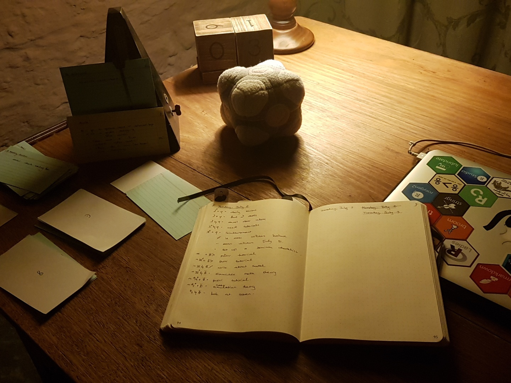
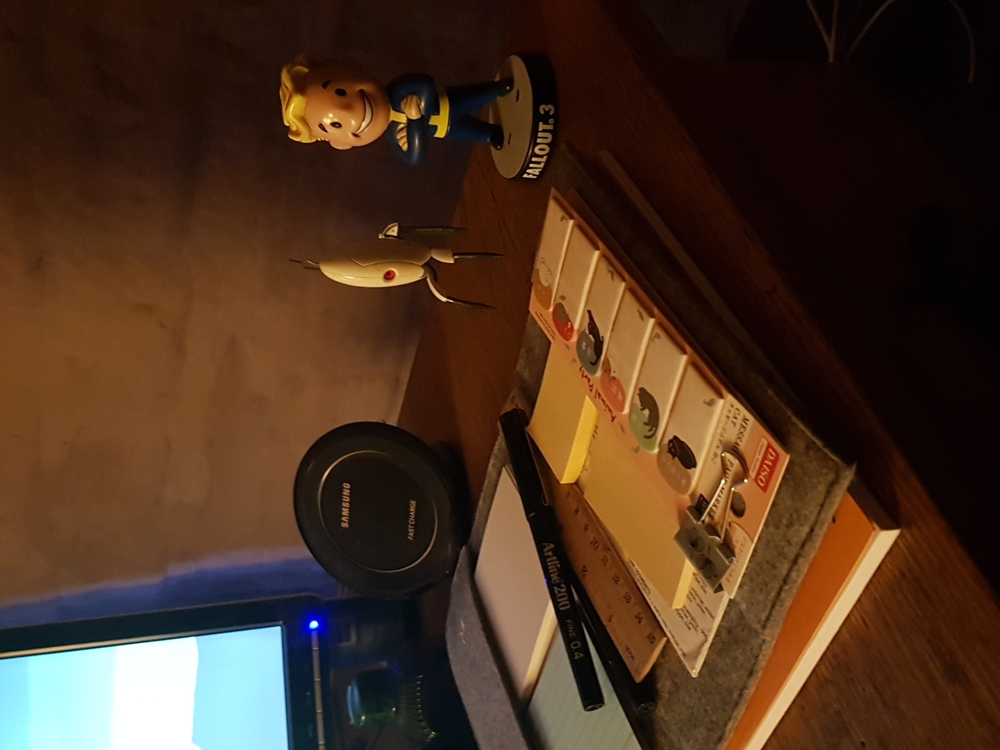
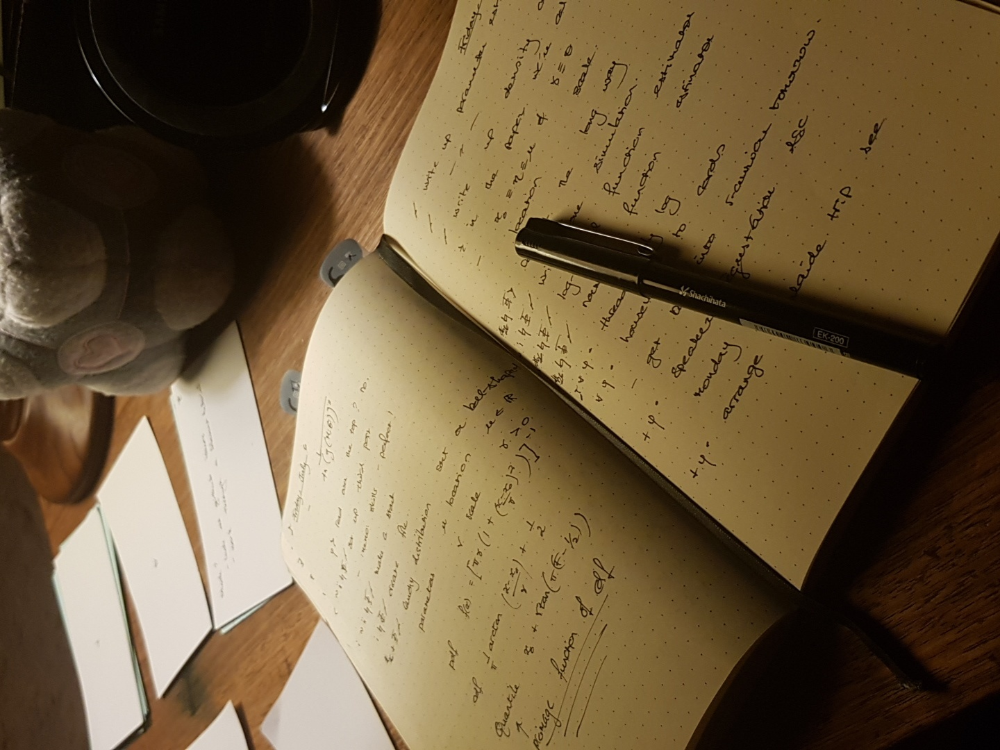
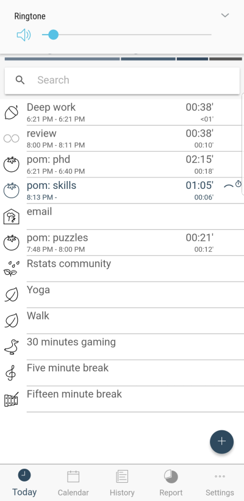

## Linking to ImageMagick 6.9.7.4
## Enabled features: fontconfig, freetype, fftw, lcms, pango, x11
## Disabled features: cairo, ghostscript, rsvg, webp
As a pianist I had daily demands on my time, a surprising mountain of administration faced me. I had gigs to book, rehearsals and lessons to schedule (and forever reschedule, have you worked with parents juggling several children?), but that was just to pay the rent.
The whole point of accepting the crappy conditions and pay was to give myself time to pursue my own musical interests. I saw the work as also giving me the opportunity to develop as a musician by deepening my understanding through explanation and technical demonstrations, but I was rarely exposed to new ideas.
So I had to make sure that I developed my skills. One of the most rewarding parts of being a musician was being able to use your skills for things like film soundtracks and bands. So, I felt it wasn’t really worth it if I wasn’t doing those things as well.
Times got tough around the global financial crisis, too. So, I felt increased pressure to develop new skills to give myself as wide a range of potential gigs as possible.
I was in a constant juggling act between skill development, the daily grind and associated administration of freelance work, and the creative outlets that ostensibly make it all worth while. All while worrying about your meagre paycheck and how it can possibly cover Melbourne’s ever-rising living costs.
Now that I am finally finding my feet in housing stability, I increasingly feel it was excellent preparation for doing a doctorate.
Cal Newport’s Deep Work gave me the understanding that finding a good productivity system is akin to finding the right yoga position for your body at this time.
Here’s what works for me right now. Sure, it’s elaborate, but I find it reduces my anxiety no end, so the time invested is well and truly worthwhile.
Now that I aspire to a research career in the mathematical sciences, it’s important that I publish papers, sure, but I must also develop skills and a network in fields where research is well supported. I have seen and experienced firsthand how impotent you can feel in a discipline that is beginning to ravage its own in declining funding conditions.
| piano | statistics | symbol |
|---|---|---|
| technique | scientific programming, mathematical statistics theory | \(\theta\) |
| gigs, admin | teaching, admin, public speaking, outreach, travel logistics | \(\varphi\) |
| composition, bands, film soundtracks | research, unconferences | \(\Phi\) |


Figure 1: All I know is that it’s working for me today.
Having the app report the time in a pie chart is great for balancing these three areas. I can also take a look at my priority-signified tasks for the day and set into my order of events pomodoros of a specific type.
I find that with piano and mathematical science alike I need to balance my time between these three areas to progress my career.
I like the free form aspect of it. I like this app because I can set pomodoros, which I like to define to be twenty minutes of deep work on one task. For these task-types it counts down for me, which I find particularly useful on those days where I feel uninspired so must set strict goals for myself.

Because balancing my time is my most important goal in a general life sense, I allocate my projects and tasks first to one of these three areas with.
For the first signifier, I use the regular bullet journal rapid logging technique of \(\cdot\) for task and \(/\) for completed and so forth.
In the third space, reading right to left, in order of importance, I signify if the task is a project or a single action (that’s where it’s a gtd system1 as well). If the project isn’t completed that day then it goes onto the monthly log to be broken down into a smaller daytime task.
In the fourth space, I signify the project itself. Ultimately, the goal is to be completing projects each day. I am currently struggling breaking my projects down into small enough projects to be completed in a single day. Or perhaps I am just very, very unproductive at the moment. All the more reason for the system. I do have high hopes for this one, and no better time to try it out than in preparation for useR! where I’ll be chairing a session, running a workshop, and presenting a package I haven’t finished yet.
In the fifth space I signfy whether it truly must be completed today \(*\), i.e., I’d get in trouble with someone; or whether I’m feeling really rather anxious about this, to tell you the truth \(\sim\).
Position from right to left.
| position | signifier | meaning |
|---|---|---|
| \(\cdot \cdot \cdot \cdot \times\) | \(\cdot\) or \(/\) | task or completed |
| \(\cdot \cdot \cdot \times \cdot\) | \(\theta\), \(\varphi\), \(\Phi\) | time category |
| \(\cdot \cdot \times \cdot \cdot\) | \(+\) or musical augmentation | project or task context |
| \(\cdot \times \cdot \cdot \cdot\) | \(I^6\) or \(iv^6\) instantiation, \(I\) or \(iv\) thereafter | project signifier |
| \(\times \cdot \cdot \cdot \cdot\) | \(*\) or \(\sim\) | priority or anxiety |
The book is really not work spending the time reading imho; everything you need to know is in the linked wiki page.↩